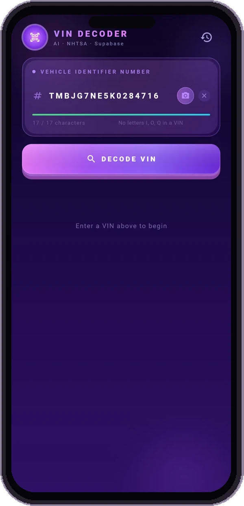
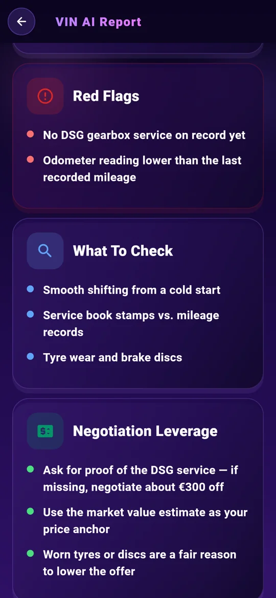
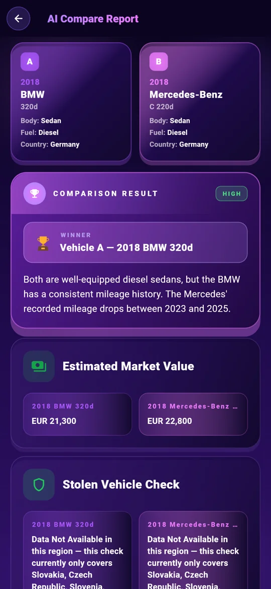

Scansiona il VIN
Punta la fotocamera verso lo VIN o digitalo. Inizia con un controllo VIN gratuito delle specifiche di base del veicolo.
Quell'auto usata ha una storia. Inizia con il suo VIN.
Ottieni le specifiche, individua i segnali d'allarme ed entra nella conversazione preparato.
Decodifica VIN gratuita. Rapporto AI completo $3.99. Nessun abbonamento.

Vai oltre una ricerca VIN. Trasforma i dettagli in domande che vale la pena porre.
Punta la fotocamera verso lo VIN o digitalo. Inizia con un controllo VIN gratuito delle specifiche di base del veicolo.
Scopri motore, allestimento, trazione e altri dati. Consulta richiami, segnalazioni dei proprietari e valutazioni dei crash test NHTSA, oltre ai consumi EPA.
Visualizza il valore di mercato e le informazioni sul chilometraggio. Contestualizza il prezzo richiesto prima di iniziare a negoziare.
Ricevi un parere dell’IA: acquistare, procedere con cautela o rinunciare, con un punteggio di ispezione, possibili punti deboli e controlli da fare di persona.
Porta domande migliori al venditore. Utilizza i consigli di ispezione e i suggerimenti per la negoziazione per pianificare la tua prossima mossa.
Chatta con l'assistente AI, anche sulle foto. Ottieni aiuto per comprendere i dettagli, in una delle 10 lingue supportate.


Confronta due auto fianco a fianco. Esamina specifiche e analisi dell’IA per valutare pro e contro prima di andare a vederle.
Trova il codice VIN a 17 caratteri sul parabrezza, sullo stipite della portiera o sui documenti del veicolo.
Esamina le specifiche decodificate e ottieni un rapporto AI con rischi, domande e consigli pratici.
Fai le domande giuste. Verifica i documenti. Organizza un’ispezione prima dell’acquisto.
Acquisto una tantum. Non è necessario alcun abbonamento.
Hai solo bisogno delle nozioni di base? La decodifica VIN è gratuita nell'app.
Scopri cosa riceverai prima di controllare la tua prossima auto.
Il numero di identificazione del veicolo (VIN) è un identificatore univoco di 17 caratteri utilizzato sui veicoli moderni. Un decoder VIN trasforma quell'identificatore in specifiche del veicolo come modello, motore e trasmissione.
Guarda la parte inferiore del parabrezza sul lato del conducente, sullo stipite della portiera del conducente o sui documenti di immatricolazione e assicurazione del veicolo. Nell'app, scansionalo con la fotocamera o digitalo.
Il report completo dell’IA comprende specifiche decodificate, un parere « acquistare / cautela / rinunciare », punteggio di ispezione, segnali d’allarme, controlli da effettuare, domande al venditore e consigli per trattare il prezzo. L’app offre anche valore di mercato e informazioni sul chilometraggio, richiami, segnalazioni dei proprietari e valutazioni dei crash test NHTSA, oltre ai consumi EPA. Copertura e disponibilità variano in base al veicolo e alla fonte.
La decodifica base VIN è gratuita nell'app. Un report AI completo costa $3.99 come acquisto una tantum, senza bisogno di abbonamento.
Lo vuoi per la TUA auto? Inserisci il tuo VIN nell'app.
Scarica su Google PlayDecodifica di base gratuita · Rapporto AI completo $3.99 · Non è necessario alcun abbonamento